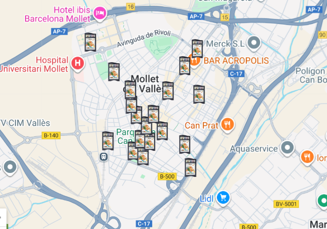

El Ayuntamiento ha desarrollado diversas medidas ambientales con el objetivo de reducir el impacto ecológico de la ciudad y mejorar la calidad de vida de sus habitantes.

Para reducir el consumo de energías contaminantes, se han instalado sistemas de producción de energía limpia en edificios públicos.

Se han creado nuevos puntos de reciclaje repartidos por toda la ciudad para facilitar la separación de residuos.
Tambien podemos recicla pequeñas baterias, bombillas y demas en los mini puntos limpios
El Ayuntamiento colabora con los centros educativos para concienciar a los más jóvenes sobre la importancia del cuidado del medio ambiente.

Para reducir la contaminación del aire, se fomenta el uso de transportes menos contaminantes y se regulan las emisiones.


| Medida | Objetivo | Estado |
|---|---|---|
| Carriles bici | Reducir uso del coche | En marcha |
| Transporte público | Menos emisiones | Mejorado |
| Zonas de bajas emisiones | Mejorar calidad del aire | Activas |